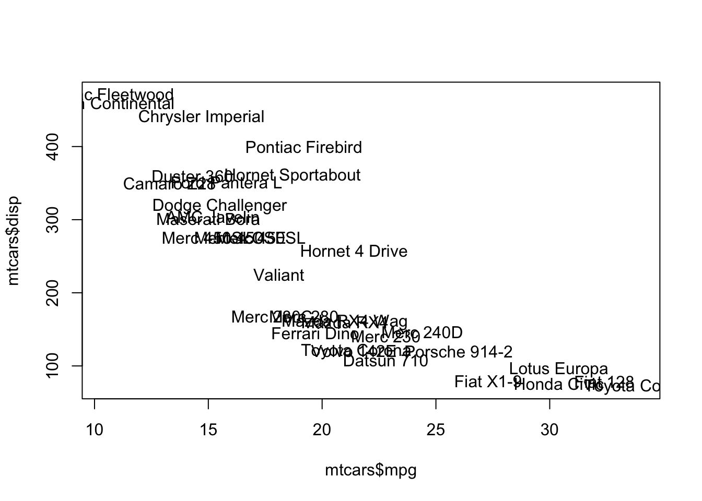
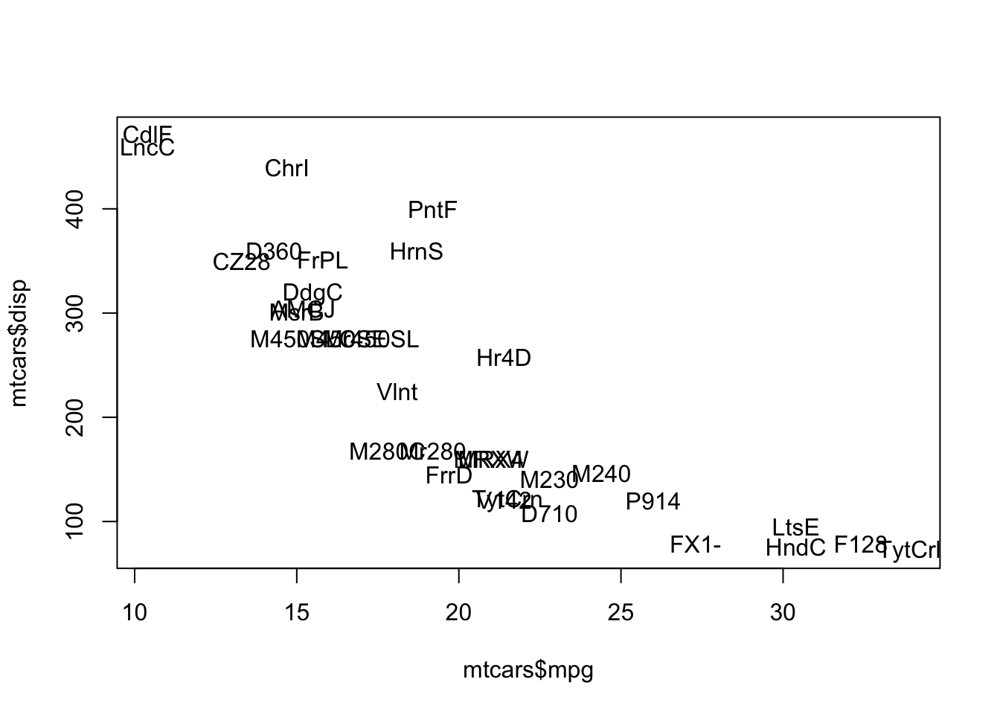

# how many characters?
nchar(c("How", "many", "characters?"))[1] 3 4 11# how many characters?
nchar("How many characters?")[1] 20"base" FunctionsIn this chapter you will learn about the different functions to do what I call basic manipulations. By “basic” I mean transforming and processing strings in such way that do not require the use of regular expressions. More advanced manipulations involve defining patterns of text and matching such patterns. This is the essential idea behind regular expressions, which is the content of part 3 in this book.
Besides creating and printing strings, there are a number of very handy functions in R for doing some basic manipulation of strings. In this section
we will review the following functions:
| Function | Description |
|---|---|
nchar() |
number of characters |
tolower() |
convert to lower case |
toupper() |
convert to upper case |
casefold() |
case folding |
chartr() |
character translation |
abbreviate() |
abbreviation |
substring() |
substrings of a character vector |
substr() |
substrings of a character vector |
nchar()One of the main functions for manipulating character strings is nchar() which counts the number of characters in a string. In other words, nchar() provides the length of a string:
# how many characters?
nchar(c("How", "many", "characters?"))[1] 3 4 11# how many characters?
nchar("How many characters?")[1] 20Notice that the white spaces between words in the second example are also counted as characters.
It is important not to confuse nchar() with length(). While the former gives us the number of characters, the later only gives the number of elements in a vector.
# how many elements?
length(c("How", "many", "characters?"))[1] 3# how many elements?
length("How many characters?")[1] 1tolower()R comes with three functions for text casefolding.
tolower()toupper()casefold()The first function we’ll discuss is tolower() which converts any upper case characters into lower case:
# to lower case
tolower(c("aLL ChaRacterS in LoweR caSe", "ABCDE"))[1] "all characters in lower case" "abcde" toupper()The opposite function of tolower() is toupper. As you may guess, this function converts any lower case characters into upper case:
# to upper case
toupper(c("All ChaRacterS in Upper Case", "abcde"))[1] "ALL CHARACTERS IN UPPER CASE" "ABCDE" casefold()The third function for case-folding is casefold() which is a wrapper for both tolower() and toupper(). Its uasge has the following form:
casefold(x, upper = FALSE)By default, casefold() converts all characters to lower case, but you can use the argument upper = TRUE to indicate the opposite (characters in upper case):
# lower case folding
casefold("aLL ChaRacterS in LoweR caSe")[1] "all characters in lower case"# upper case folding
casefold("All ChaRacterS in Upper Case", upper = TRUE)[1] "ALL CHARACTERS IN UPPER CASE"I’ve found the case-folding functions to be very helpful when I write functions that take a character input which may be specified in lower or upper case, or perhaps as a mix of both cases. For instance, consider the function temp_convert() that takes a temperature value in Fahrenheit degress, and a character string indicating the name of the scale to be converted.
temp_convert <- function(deg = 1, to = "celsius") {
switch(to,
"celsius" = (deg - 32) * (5/9),
"kelvin" = (deg + 459.67) * (5/9),
"reaumur" = (deg - 32) * (4/9),
"rankine" = deg + 459.67)
}Here is how you call temp_convert() to convert 10 Fahrenheit degrees into celsius degrees:
temp_convert(deg = 10, to = "celsius")[1] -12.22222temp_convert() works fine when the argument to = 'celsius'. But what happens if you try temp_convert(30, 'Celsius') or temp_convert(30, 'CELSIUS')?
To have a more flexible function temp_convert() you can apply tolower() to the argument to, and in this way guarantee that the provided string by the user is always in lower case:
temp_convert <- function(deg = 1, to = "celsius") {
switch(tolower(to),
"celsius" = (deg - 32) * (5/9),
"kelvin" = (deg + 459.67) * (5/9),
"reaumur" = (deg - 32) * (4/9),
"rankine" = deg + 459.67)
}Now all the following three calls are equivalent:
temp_convert(30, 'celsius')
temp_convert(30, 'Celsius')
temp_convert(30, 'CELSIUS')chartr()There’s also the function chartr() which stands for character translation. chartr() takes three arguments: an old string, a new string, and a character vector x:
chartr(old, new, x)The way chartr() works is by replacing the characters in old that appear in x by those indicated in new. For example, suppose we want to translate the letter "a" (lower case) with "A" (upper case) in the sentence "This is a boring string":
# replace 'a' by 'A'
chartr("a", "A", "This is a boring string")[1] "This is A boring string"It is important to note that old and new must have the same number of characters, otherwise you will get a nasty error message like this one:
# incorrect use
chartr("ai", "X", "This is a bad example")Error in chartr("ai", "X", "This is a bad example"): 'old' is longer than 'new'Here’s a more interesting example with old = "aei" and new = "\#!?". This implies that any 'a' in 'x' will be replaced by '\#', any 'e' in 'x' will be replaced by '?', and any 'i' in 'x' will be replaced by '?':
# multiple replacements
crazy <- c("Here's to the crazy ones", "The misfits", "The rebels")
chartr("aei", "#!?", crazy)[1] "H!r!'s to th! cr#zy on!s" "Th! m?sf?ts"
[3] "Th! r!b!ls" abbreviate()Another useful function for basic manipulation of character strings is abbreviate(). Its usage has the following structure:
abbreviate(names.org, minlength = 4, dot = FALSE, strict = FALSE,
method = c("left.keep", "both.sides"))Although there are several arguments, the main parameter is the character vector (names.org) which will contain the names that we want to abbreviate:
# some color names
some_colors <- colors()[1:4]
some_colors[1] "white" "aliceblue" "antiquewhite" "antiquewhite1"# abbreviate (default usage)
colors1 <- abbreviate(some_colors)
colors1 white aliceblue antiquewhite antiquewhite1
"whit" "alcb" "antq" "ant1" # abbreviate with 'minlength'
colors2 <- abbreviate(some_colors, minlength = 5)
colors2 white aliceblue antiquewhite antiquewhite1
"white" "alcbl" "antqw" "antq1" # abbreviate
colors3 <- abbreviate(some_colors, minlength = 3, method = "both.sides")
colors3 white aliceblue antiquewhite antiquewhite1
"wht" "alc" "ant" "an1" A common use for abbreviate() is when plotting names of objects or variables in a graphic. I will use the built-in data set mtcars to show you a simple example with a scatterplot between variables mpg and disp
plot(mtcars$mpg, mtcars$disp, type = "n")
text(mtcars$mpg, mtcars$disp, rownames(mtcars))
The names of the cars are all over the plot. In this situation you may want to consider using abbreviate() to shrink the names of the cars and produce a less “crowded” plot:
plot(mtcars$mpg, mtcars$disp, type = "n")
text(mtcars$mpg, mtcars$disp, abbreviate(rownames(mtcars)))
substr()One common operation when working with strings is the extraction and replacement of some characters. There a various ways in which characters can be replaced. If the replacement is based on the positions that characters occupy in the string, you can use the functions substr() and substring()
substr() extracts or replaces substrings in a character vector. Its usage has the following form:
substr(x, start, stop)x is a character vector, start indicates the first element to be replaced, and stop indicates the last element to be replaced:
# extract 'bcd'
substr("abcdef", 2, 4)[1] "bcd"# replace 2nd letter with hash symbol
x <- c("may", "the", "force", "be", "with", "you")
substr(x, 2, 2) <- "#"
x[1] "m#y" "t#e" "f#rce" "b#" "w#th" "y#u" # replace 2nd and 3rd letters with happy face
y = c("may", "the", "force", "be", "with", "you")
substr(y, 2, 3) <- ":)"
y[1] "m:)" "t:)" "f:)ce" "b:" "w:)h" "y:)" # replacement with recycling
z <- c("may", "the", "force", "be", "with", "you")
substr(z, 2, 3) <- c("#", "```")
z[1] "m#y" "t``" "f#rce" "b`" "w#th" "y``" substring()Closely related to substr() is the function substring() which extracts or replaces substrings in a character vector. Its usage has the following form:
substring(text, first, last = 1000000L)text is a character vector, first indicates the first element to be replaced, and last indicates the last element to be replaced:
# same as 'substr'
substring("ABCDEF", 2, 4)[1] "BCD"substr("ABCDEF", 2, 4)[1] "BCD"# extract each letter
substring("ABCDEF", 1:6, 1:6)[1] "A" "B" "C" "D" "E" "F"# multiple replacement with recycling
text6 <- c("more", "emotions", "are", "better", "than", "less")
substring(text6, 1:3) <- c(" ", "zzz")
text6[1] " ore" "ezzzions" "ar " "zzzter" "t an" "lezz" R has dedicated functions for performing set operations on two given vectors. This implies that we can apply functions such as set union, intersection, difference, equality and membership, on "character" vectors.
| Function | Description |
|---|---|
union() |
set union |
intersect() |
intersection |
setdiff() |
set difference |
setequal() |
equal sets |
identical() |
exact equality |
is.element() |
is element |
%in%() |
contains |
sort() |
sorting |
paste(rep()) |
repetition |
union()Let’s start our reviewing of set functions with union(). As its name indicates, you can use `union()} when you want to obtain the elements of the union between two character vectors:
# two character vectors
set1 <- c("some", "random", "words", "some")
set2 <- c("some", "many", "none", "few")
# union of set1 and set2
union(set1, set2)[1] "some" "random" "words" "many" "none" "few" Notice that union() discards any duplicated values in the provided vectors. In the previous example the word "some" appears twice inside set1 but it appears only once in the union. In fact all the set operation functions will discard any duplicated values.
intersect()Set intersection is performed with the function intersect(). You can use this function when you wish to get those elements that are common to both vectors:
# two character vectors
set3 <- c("some", "random", "few", "words")
set4 <- c("some", "many", "none", "few")
# intersect of set3 and set4
intersect(set3, set4)[1] "some" "few" setdiff()Related to the intersection, you might be interested in getting the difference of the elements between two character vectors. This can be done with setdiff():
# two character vectors
set5 <- c("some", "random", "few", "words")
set6 <- c("some", "many", "none", "few")
# difference between set5 and set6
setdiff(set5, set6)[1] "random" "words" setequal()The function setequal() allows you to test the equality of two character vectors. If the vectors contain the same elements, setequal() returns TRUE (FALSE otherwise)
# three character vectors
set7 <- c("some", "random", "strings")
set8 <- c("some", "many", "none", "few")
set9 <- c("strings", "random", "some")
# set7 == set8?
setequal(set7, set8)[1] FALSE# set7 == set9?
setequal(set7, set9)[1] TRUEidentical()Sometimes setequal() is not always what we want to use. It might be the case that you want to test whether two vectors are exactly equal (element by element). For instance, testing if set7 is exactly equal to set9. Although both vectors contain the same set of elements, they are not exactly the same vector. Such test can be performed with the function identical()
# set7 identical to set7?
identical(set7, set7)[1] TRUE# set7 identical to set9?
identical(set7, set9)[1] FALSEIf you consult the help documentation of identical(), you will see that this function is the “safe and reliable way to test two objects for being exactly equal”.
is.element()If you wish to test if an element is contained in a given set of character strings you can do so with is.element():
# three vectors
set10 <- c("some", "stuff", "to", "play", "with")
elem1 <- "play"
elem2 <- "crazy"
# elem1 in set10?
is.element(elem1, set10)[1] TRUE# elem2 in set10?
is.element(elem2, set10)[1] FALSEAlternatively, you can use the binary operator %in% to test if an element is contained in a given set. The function %in% returns TRUE if the first operand is contained in the second, and it returns FALSE otherwise:
# elem1 in set10?
elem1 %in% set10[1] TRUE# elem2 in set10?
elem2 %in% set10[1] FALSEsort()The function sort() allows you to sort the elements of a vector, either in increasing order (by default) or in decreasing order using the argument decreasing:
set11 = c("today", "produced", "example", "beautiful", "a", "nicely")
# sort (decreasing order)
sort(set11)[1] "a" "beautiful" "example" "nicely" "produced" "today" # sort (increasing order)
sort(set11, decreasing = TRUE)[1] "today" "produced" "nicely" "example" "beautiful" "a" If you have alpha-numeric strings, sort() will put the numbers first when sorting in increasing order:
set12 = c("today", "produced", "example", "beautiful", "1", "nicely")
# sort (decreasing order)
sort(set12)[1] "1" "beautiful" "example" "nicely" "produced" "today" # sort (increasing order)
sort(set12, decreasing = TRUE)[1] "today" "produced" "nicely" "example" "beautiful" "1" paste(rep())A very common operation with strings is replication, that is, given a string we want to replicate it several times. Although there is no single function in R for that purpose, we can combine paste() and rep() like so:
# repeat "x" 4 times
paste(rep("x", 4), collapse = '')[1] "xxxx"